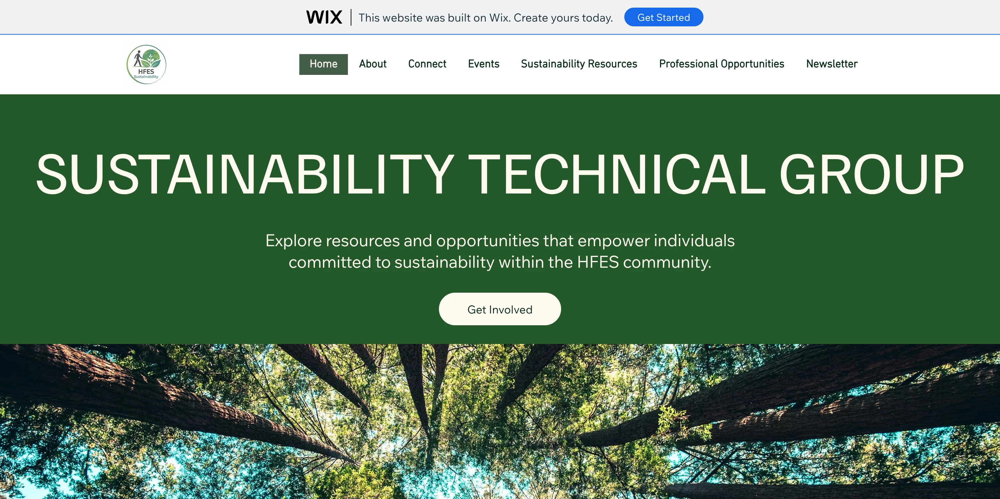
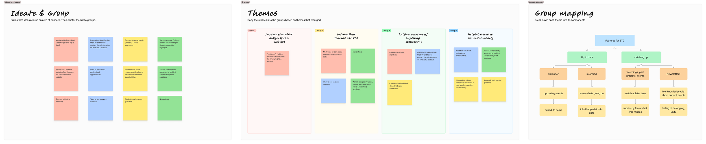
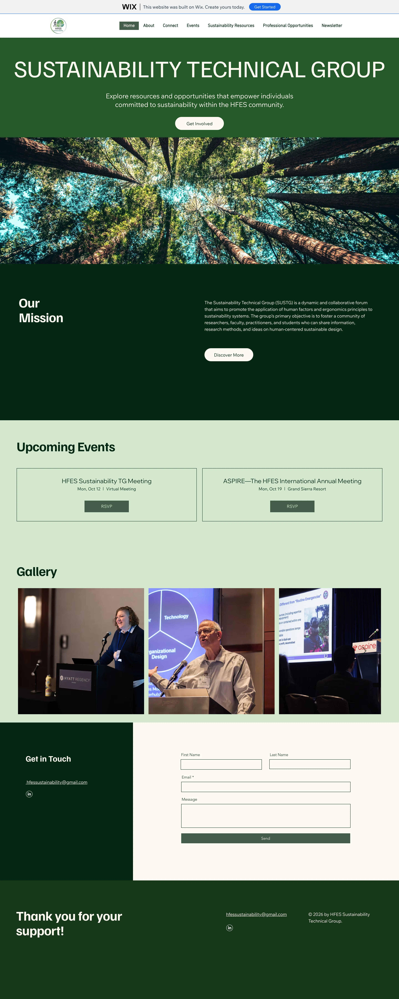

HFES STG.
A website for the Sustainability Technical Group
- Leadership
- Non-profit
- Usability Testing

As Website Lead for the Human Factors and Ergonomics Society’s Sustainability Technical Group, I led the website from research to launch.
What is HFES?
The Human Factors and Ergonomics Society is a professional association for psychologists, engineers, designers and researchers who design systems around the people who use them.
Members join technical groups built around a specialty, such as health care, aging or transportation.
200+ members and years of events, recordings and resources, with no central place to find them.
give members one place to learn, connect and stay up to date?
Research, narrowing in
Broad input first, then smaller, deeper studies to make and test decisions.
What we heard

Members
- Upcoming events in one place
- Access to past recordings
- Professional opportunities & best practices
- Ways to connect with other members
Stakeholders
- Highlight past leadership
- A comprehensive resource hub
From insight to decision
Insight
Design decision
Events and recordings were scattered
Event access and an archive of past content
New members had no starting point
An entry point for onboarding and learning
Leadership info lived in many places
One place for members and past leadership
Testing and further research surfaced more needs
Added sustainability and professional resources
Structure

Card sorting
17 members sorted the site’s content into groups. Their groupings became the five main sections ↓
Home page
About
- What is sustainability?
- What is HFES STG?
- How to join?
- Through the HFES website
Connect
- Leadership highlights (past)
- HFES STG member contacts
- Connect with leadership members
- Contact
- Social media (LinkedIn)
HFES STG Resources
- Past events & recordings
- Past projects
- Past recordings
- Past events
- Past slides
- Calendar
- Upcoming events
- Newsletter
Sustainability Resources
- Research publications
- Tool kits
- Case studies
Professional Opportunities
- Guidance for entering the field
- Early career guidance
- Professional opportunities
Wireframes
Low-fidelity layouts to settle content before building the MVP in Wix.

Testing
Usability tests and interviews with 5 members found improvements to the MVP and informed a core persona.
Usability issues found · priority
- High
Leadership headshots are inconsistent and include former board members
Different backgrounds distract attention; unclear who is still active
- High
Events lack years on dates and offer no recordings or abstracts for past events
Hard to gauge relevance or revisit missed sessions
- Medium
Tab labels are vague: “Join” should say “Register”; no standalone Events tab
Mismatched labels cause hesitation
- Medium
“Leadership Highlights” label feels superfluous; gap below section feels broken
“Highlights” implies marketing rather than substance
- Medium
About section is too long; “What is Sustainability” is buried
New visitors need orientation before depth
- Low
Gallery images are too large; footer font is uneven and too tall
Visual imbalance across sections
- Low
HFES contact links are difficult to find
Should be more prominent, especially for new members
Persona
Dr. Maya Chen
Human Factors Researcher & Sustainability Advocate
“I don’t want to live to see the carbon apocalypse, but it’s also just the moral thing to do.”
Background
- Age
- 35
- Education
- PhD, Human Factors & Ergonomics
- Setting
- Industry & research facility
- Affiliations
- HFES member (2–3 yrs), LEED-adjacent network
Goals for the STG website
- Primary
- Find events, meetings and community activities quickly
- Secondary
- Discover papers, resources and career paths in sustainability
- Secondary
- Network with TG members; bring in younger researchers
- Also wants
- FAQ, certifications, job titles, internship & guest speaker listings
Values & motivations
- Carbon footprint reduction
- Ethical AI labor
- Circular design
- Industrial hygiene
- HFE behavior design
- Longevity over convenience
Tech & accessibility expectations
- Responsive across devices
- One-page key info (no scroll hunting)
- Visible search bar
- Images over text walls
- Consistent navigation
What I learned leading it
Leading a team
As Website Lead, I set priorities and split the work across a volunteer team, learning to lead as I went.
Limited time, limited craft
With little time and few resources, we built in Wix and did less custom design by hand than I wanted.
But driven by users
Each round of testing changed the site, so it closely reflects what members asked for.
Stakeholder communication
Presenting progress to the group’s leadership and gathering their input kept the site aligned with its goals.
Process
- 01Survey200+ members
- 02Affinity mapDefine user needs
- 03Card sort17 users
- 04IA & flowsContent structure
- 05WireframesLow fidelity
- 06MVPBuilt in Wix
- 07Test5 members
- 08LaunchIterate & expand
Launch
Live and in active use by the group, with the team continuing to update content and design.
